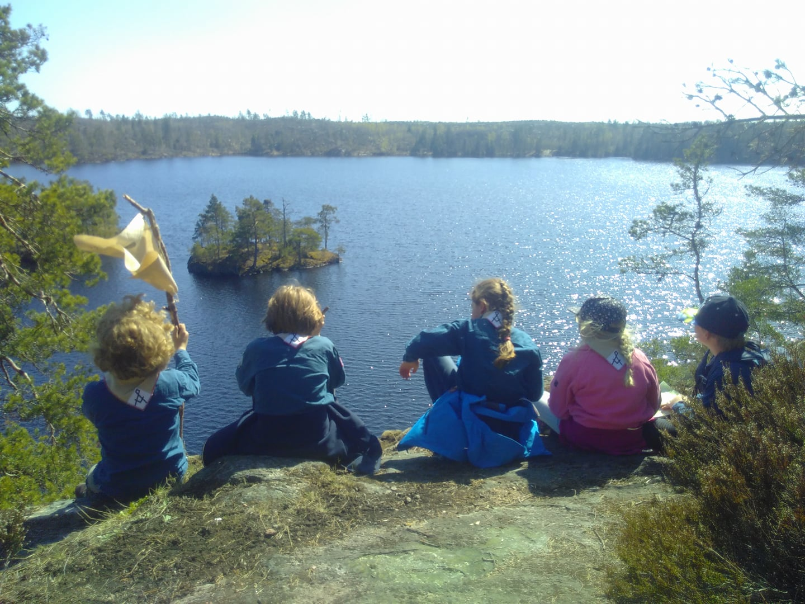

Vad behöver man för saker? |

Scoutdräkten: Vi scouter känns lätt igen när vi bär den blå scoutskjortan eller andra blå scoutkläder. Det skapar gemenskap! På scoutskjortan fäster vi märken för att berätta vad vi gjort, tillhörighet och vilka intressen vi har. Vi bär scoutdräkt på avdelningsmötena, läger, hajk, utfärd, annat arrangemang eller när vi skall vara representativa för kåren. Grundplaggen i scoutdräkten är en scoutskjorta -t-shirt, -piké med märken och scouthalsduk med sölja. Köp scoutdräkten: Vi brukar inte förvänta oss att man köper några scoutkläder under första halvåret som scout men därefter bör man skaffa sig något plagg. Samtidigt som man köper plaggen bör man passa på att köpa förbundsmärket och VOSM/WAGGS märket till skjortan. Årsta scoutkårs märke får ni gratis av kåren. Du kan köpa scoutdräkten, scoutmärken, andra snygga scoutkläder och massor av coola scoutprylar i Scouternas egen shop. Där kan du också läsa mer om vad som gäller för märkesplacering. Kårhalsduken köper man från kåren för 70 kronor. Var ska märkena sitta? Märkesordningen hjälper dig med var märkena ska placeras på scoutskjortan. Övriga kläder och utrustning: Scouting bygger på utepedagogik, så man behöver varma kläder, regnkläder, ordentliga kängor och skor. För att åka med på övernattningar och hajker behöver man även en sovsäck, ett liggunderlag och en ryggsäck. Mer info om utrustningskrav kan avdelningsledarna ge. Barn växer, så kolla om ni kan köpa begagnade grejor. |
Medlemsavgift |
I medlemsavgiften ingår det mesta av den verksamhet vi genomför. När vi har läger tillkommer oftast en extra avgift. Kostnader för hajker och utfärder tillkommer. Viss personlig utrustning måste man också köpa, men mycket finnas att låna och frågar man ledarna kan man få tips om bra saker och butiker. Man får prova på scouting under tre möten innan man måste bestämma sig och i så fall betala medlemsavgiften. |